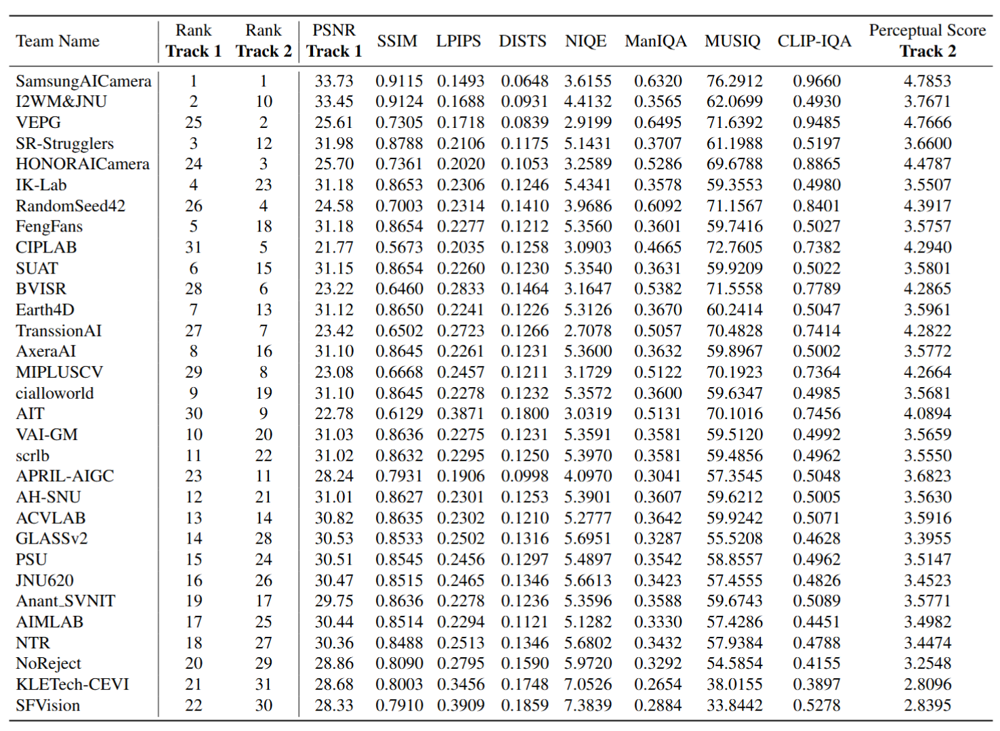

NTIRE Workshop & Challenges @ CVPR 2026 • Denver, Colorado
Single-Image Super-Resolution (×4) Challenge
Official New Trends in Image Restoration and Enhancement (NTIRE) 2026 track, co-located with IEEE/CVF Conference on Computer Vision and Pattern Recognition (CVPR) 2026: single-image super-resolution at ×4.
Challenge Overview
This challenge constitutes an official competition track of the New Trends in Image Restoration and Enhancement (NTIRE) 2026 Workshop & Challenges, co-located with the IEEE/CVF Conference on Computer Vision and Pattern Recognition (CVPR) 2026 in Denver, Colorado, USA. NTIRE provides a standardized benchmark for image restoration and enhancement research with publicly defined data splits, evaluation protocols, and reporting procedures to support fair comparison and reproducibility.
Task formulation
Participants address single-image super-resolution with four-fold upsampling: given one low-resolution RGB input, produce one high-resolution RGB output. The problem is ill-posed; methods are expected to recover plausible high-frequency structure and texture while limiting artifacts. The challenge evaluates algorithms under a fixed training, validation, and testing protocol released by the organizers.
Evaluation protocol
Performance is not summarized by a single scalar. Restoration and perceptual quality are assessed on separate leaderboards (see Evaluation and Challenge Results). The overall ordering policy combines the two track rankings according to the rule stated in the results section, so that high-fidelity and perceptually strong solutions are both reflected in the final standings.
Important Dates
Join the Challenge
Competition portal
Register, download data, and submit results on the CodaBench competition page.
Open CodaBenchNew Trends in Image Restoration and Enhancement (NTIRE) 2026
The central portal lists the full NTIRE 2026 Workshop & Challenges program and companion tracks.
NTIRE 2026 websiteData & Competition Phases
All released corpora are distributed through the CodaBench competition interface under the Files tab.
Development phase
Training data consist of registered low-resolution and high-resolution image pairs for supervised model development. The validation release provides low-resolution inputs only and is intended for diagnostics, ablation studies, and model selection; validation data must not be used for training or parameter updates in violation of the challenge rules.
Testing phase and ranking
The test release contains low-resolution inputs only. Participants submit super-resolution outputs by the prescribed deadline; the organizing committee computes official metrics. A completed Fact Sheet together with reproducible source code or a runnable executable is required by the separate code submission deadline for verification.
Evaluation
Independent evaluation tracks
- Track 1 — Restoration quality: ranking by peak signal-to-noise ratio (PSNR) computed under the official test procedure (luminance Y channel; 4-pixel boundary shave where specified in the protocol).
- Track 2 — Perceptual quality: ranking by a fixed composite score combining LPIPS, DISTS, NIQE, MUSIQ, ManIQA, and CLIPIQA, as specified for this track. The closed-form expression and leaderboard appear under Challenge Results.
Overall ordering on the published table is determined from the two track rankings according to the policy stated in Challenge Results (considering both the best single-track rank and the mean rank across tracks).
Required submissions
- Test-set super-resolution images in the filename convention and container format specified on CodaBench.
- Fact Sheet and reproducible code or executable by the announced code deadline.
- Leading teams may be invited to present at the New Trends in Image Restoration and Enhancement (NTIRE) 2026 workshop session at CVPR 2026.
Challenge Results
- 31 valid submissions are ranked.
- Evaluation set: all metrics are computed on DIV2K-test (100 images).
- Track 1 — Restoration: ranked by peak signal-to-noise ratio (PSNR) (luminance Y channel; 4-pixel shave).
-
Track 2 — Perceptual: ranked by a combined score:
Score = (1 − LPIPS) + (1 − DISTS) + CLIPIQA + MANIQA + MUSIQ / 100 + max(0, (10 − NIQE) / 10) - Overall order: ranking mainly depends on the higher ranking among the two tracks and the average value of the rankings in the two tracks.
Full ranking table

Awards & Opportunities
Awards
Top-ranked teams may be invited to submit workshop manuscripts (up to eight pages, subject to the call for papers) to the New Trends in Image Restoration and Enhancement (NTIRE) 2026 workshop at IEEE/CVF CVPR 2026, for inclusion in the official CVPR 2026 Workshops proceedings, pending peer review and acceptance.
Prizes and certificates are awarded independently on the restoration-quality and perceptual-quality tracks; the top three teams in each track are eligible for challenge certificates, subject to final organizer confirmation.
Additional opportunities
Information regarding sponsor prizes and travel support will be announced on the official New Trends in Image Restoration and Enhancement (NTIRE) website as it becomes available.
Certificates
Track 1 — Restoration
The top three teams by PSNR have received NTIRE 2026 Image SR (×4) Restoration-Track certificates:
- SamsungAICamera
- I2WM&JNU
- SR-Strugglers
Track 2 — Perceptual
The top three teams by Perceptual Score have received NTIRE 2026 Image SR (×4) Perceptual-Track certificates:
- SamsungAICamera
- VEPG
- HONORAICamera
Organizers
Organizer list may be updated.
WeChat Group
Scan the QR code below to join the official WeChat group for announcements and discussion.
Note: If the QR code expires, please scan the QR code at the bottom of the competition homepage to join the group.
Citation
If you find this challenge helpful in your research or work, please cite:
@inproceedings{ntire2026srx4,
title={The Fourth Challenge on Image Super-Resolution (×4) at NTIRE 2026: Benchmark Results and Method Overview},
author={Chen, Zheng and Liu, Kai and Wang, Jingkai and Yan, Xianglong and Li, Jianze and Zhang, Ziqing and Gong, Jue and Li, Jiatong and Sun, Lei and Liu, Xiaoyang and Timofte, Radu and Zhang, Yulun and others},
booktitle={CVPRW},
year={2026}
}